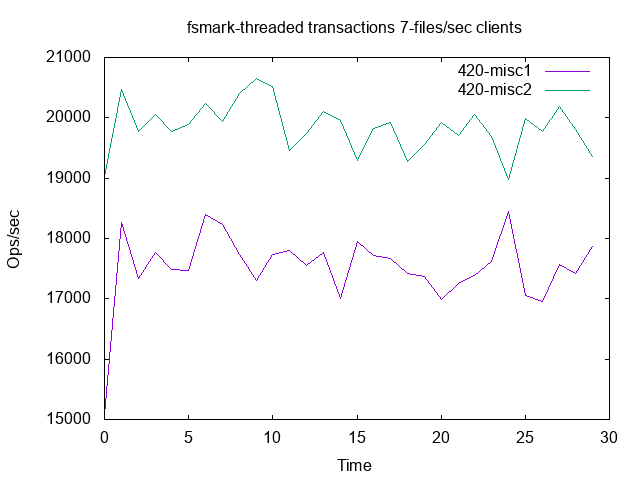
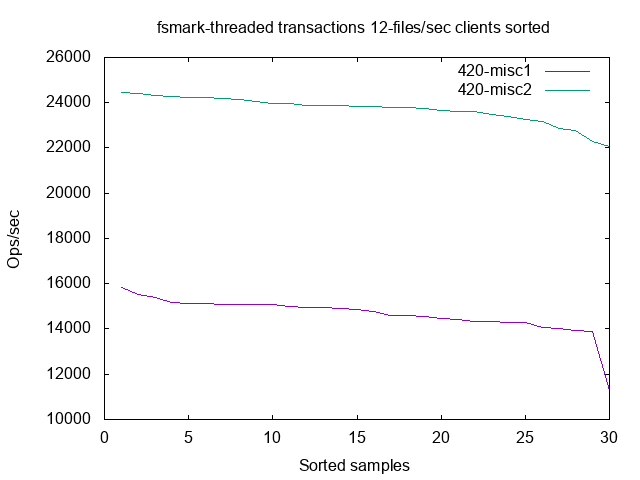

| 420 | 420 | ||||
|---|---|---|---|---|---|
| misc1 | misc2 | ||||
| Min | 1-files/sec | 3522.40 | ( 0.00%) | 3535.40 | ( 0.37%) |
| Min | 3-files/sec | 10155.20 | ( 0.00%) | 10382.60 | ( 2.24%) |
| Min | 5-files/sec | 14228.10 | ( 0.00%) | 15325.00 | ( 7.71%) |
| Min | 7-files/sec | 15078.20 | ( 0.00%) | 18978.60 | ( 25.87%) |
| Min | 12-files/sec | 11267.50 | ( 0.00%) | 22084.10 | ( 96.00%) |
| Min | 16-files/sec | 9728.20 | ( 0.00%) | 22813.40 | ( 134.51%) |
| 1st-qrtle | 1-files/sec | 3689.60 | ( 0.00%) | 3726.40 | ( 1.00%) |
| 1st-qrtle | 3-files/sec | 10333.50 | ( 0.00%) | 10508.90 | ( 1.70%) |
| 1st-qrtle | 5-files/sec | 14662.30 | ( 0.00%) | 15821.10 | ( 7.90%) |
| 1st-qrtle | 7-files/sec | 17339.60 | ( 0.00%) | 19691.50 | ( 13.56%) |
| 1st-qrtle | 12-files/sec | 14335.30 | ( 0.00%) | 23496.00 | ( 63.90%) |
| 1st-qrtle | 16-files/sec | 13144.30 | ( 0.00%) | 24605.30 | ( 87.19%) |
| 2nd-qrtle | 1-files/sec | 3713.90 | ( 0.00%) | 3738.90 | ( 0.67%) |
| 2nd-qrtle | 3-files/sec | 10439.80 | ( 0.00%) | 10553.20 | ( 1.09%) |
| 2nd-qrtle | 5-files/sec | 15040.50 | ( 0.00%) | 15913.80 | ( 5.81%) |
| 2nd-qrtle | 7-files/sec | 17569.70 | ( 0.00%) | 19886.50 | ( 13.19%) |
| 2nd-qrtle | 12-files/sec | 14869.90 | ( 0.00%) | 23822.70 | ( 60.21%) |
| 2nd-qrtle | 16-files/sec | 13696.00 | ( 0.00%) | 24999.20 | ( 82.53%) |
| 3rd-qrtle | 1-files/sec | 3740.30 | ( 0.00%) | 3753.40 | ( 0.35%) |
| 3rd-qrtle | 3-files/sec | 10598.80 | ( 0.00%) | 10680.00 | ( 0.77%) |
| 3rd-qrtle | 5-files/sec | 15425.20 | ( 0.00%) | 16182.00 | ( 4.91%) |
| 3rd-qrtle | 7-files/sec | 17776.20 | ( 0.00%) | 20061.10 | ( 12.85%) |
| 3rd-qrtle | 12-files/sec | 15066.40 | ( 0.00%) | 24152.60 | ( 60.31%) |
| 3rd-qrtle | 16-files/sec | 14325.40 | ( 0.00%) | 25453.40 | ( 77.68%) |
| Max-90% | 1-files/sec | 3771.90 | ( 0.00%) | 3786.80 | ( 0.40%) |
| Max-90% | 3-files/sec | 10639.10 | ( 0.00%) | 10755.70 | ( 1.10%) |
| Max-90% | 5-files/sec | 15502.40 | ( 0.00%) | 16262.90 | ( 4.91%) |
| Max-90% | 7-files/sec | 18226.40 | ( 0.00%) | 20397.80 | ( 11.91%) |
| Max-90% | 12-files/sec | 15162.70 | ( 0.00%) | 24267.10 | ( 60.04%) |
| Max-90% | 16-files/sec | 14997.10 | ( 0.00%) | 25503.70 | ( 70.06%) |
| Max-95% | 1-files/sec | 3789.30 | ( 0.00%) | 3803.20 | ( 0.37%) |
| Max-95% | 3-files/sec | 10704.80 | ( 0.00%) | 10863.50 | ( 1.48%) |
| Max-95% | 5-files/sec | 15761.70 | ( 0.00%) | 16364.80 | ( 3.83%) |
| Max-95% | 7-files/sec | 18398.50 | ( 0.00%) | 20521.20 | ( 11.54%) |
| Max-95% | 12-files/sec | 15521.20 | ( 0.00%) | 24419.10 | ( 57.33%) |
| Max-95% | 16-files/sec | 15335.00 | ( 0.00%) | 25665.70 | ( 67.37%) |
| Max-99% | 1-files/sec | 3794.40 | ( 0.00%) | 3814.30 | ( 0.52%) |
| Max-99% | 3-files/sec | 10719.30 | ( 0.00%) | 10918.60 | ( 1.86%) |
| Max-99% | 5-files/sec | 16057.80 | ( 0.00%) | 16386.80 | ( 2.05%) |
| Max-99% | 7-files/sec | 18444.20 | ( 0.00%) | 20658.10 | ( 12.00%) |
| Max-99% | 12-files/sec | 15832.30 | ( 0.00%) | 24471.60 | ( 54.57%) |
| Max-99% | 16-files/sec | 15531.80 | ( 0.00%) | 25964.60 | ( 67.17%) |
| Max | 1-files/sec | 3794.40 | ( 0.00%) | 3814.30 | ( 0.52%) |
| Max | 3-files/sec | 10719.30 | ( 0.00%) | 10918.60 | ( 1.86%) |
| Max | 5-files/sec | 16057.80 | ( 0.00%) | 16386.80 | ( 2.05%) |
| Max | 7-files/sec | 18444.20 | ( 0.00%) | 20658.10 | ( 12.00%) |
| Max | 12-files/sec | 15832.30 | ( 0.00%) | 24471.60 | ( 54.57%) |
| Max | 16-files/sec | 15531.80 | ( 0.00%) | 25964.60 | ( 67.17%) |
| Hmean | 1-files/sec | 3706.89 | ( 0.00%) | 3725.53 | ( 0.50%) |
| Hmean | 3-files/sec | 10441.48 | ( 0.00%) | 10584.83 | ( 1.37%) |
| Hmean | 5-files/sec | 15019.14 | ( 0.00%) | 15944.21 | ( 6.16%) |
| Hmean | 7-files/sec | 17498.90 | ( 0.00%) | 19836.13 | ( 13.36%) |
| Hmean | 12-files/sec | 14584.02 | ( 0.00%) | 23690.11 | ( 62.44%) |
| Hmean | 16-files/sec | 13540.04 | ( 0.00%) | 24879.47 | ( 83.75%) |
| Stddev | 1-files/sec | 58.54 | ( 0.00%) | 60.68 | ( 3.64%) |
| Stddev | 3-files/sec | 157.46 | ( 0.00%) | 134.53 | ( -14.56%) |
| Stddev | 5-files/sec | 444.53 | ( 0.00%) | 257.56 | ( -42.06%) |
| Stddev | 7-files/sec | 605.65 | ( 0.00%) | 410.26 | ( -32.26%) |
| Stddev | 12-files/sec | 796.33 | ( 0.00%) | 586.91 | ( -26.30%) |
| Stddev | 16-files/sec | 1144.87 | ( 0.00%) | 684.33 | ( -40.23%) |
| Coeff | 1-files/sec | 1.58 | ( 0.00%) | 1.63 | ( 3.12%) |
| Coeff | 3-files/sec | 1.51 | ( 0.00%) | 1.27 | ( -15.72%) |
| Coeff | 5-files/sec | 2.96 | ( 0.00%) | 1.62 | ( -45.39%) |
| Coeff | 7-files/sec | 3.46 | ( 0.00%) | 2.07 | ( -40.19%) |
| Coeff | 12-files/sec | 5.44 | ( 0.00%) | 2.48 | ( -54.50%) |
| Coeff | 16-files/sec | 8.39 | ( 0.00%) | 2.75 | ( -67.24%) |
| Best99%Hmean | 1-files/sec | 3713.59 | ( 0.00%) | 3732.45 | ( 0.51%) |
| Best99%Hmean | 3-files/sec | 10451.64 | ( 0.00%) | 10591.94 | ( 1.34%) |
| Best99%Hmean | 5-files/sec | 15047.99 | ( 0.00%) | 15966.45 | ( 6.10%) |
| Best99%Hmean | 7-files/sec | 17596.31 | ( 0.00%) | 19867.09 | ( 12.90%) |
| Best99%Hmean | 12-files/sec | 14733.56 | ( 0.00%) | 23749.67 | ( 61.19%) |
| Best99%Hmean | 16-files/sec | 13725.49 | ( 0.00%) | 24957.41 | ( 81.83%) |
| Best95%Hmean | 1-files/sec | 3718.36 | ( 0.00%) | 3738.10 | ( 0.53%) |
| Best95%Hmean | 3-files/sec | 10461.93 | ( 0.00%) | 10599.11 | ( 1.31%) |
| Best95%Hmean | 5-files/sec | 15071.37 | ( 0.00%) | 15984.59 | ( 6.06%) |
| Best95%Hmean | 7-files/sec | 17619.91 | ( 0.00%) | 19898.74 | ( 12.93%) |
| Best95%Hmean | 12-files/sec | 14765.21 | ( 0.00%) | 23805.23 | ( 61.23%) |
| Best95%Hmean | 16-files/sec | 13788.27 | ( 0.00%) | 25029.30 | ( 81.53%) |
| Best90%Hmean | 1-files/sec | 3722.30 | ( 0.00%) | 3743.12 | ( 0.56%) |
| Best90%Hmean | 3-files/sec | 10472.62 | ( 0.00%) | 10606.76 | ( 1.28%) |
| Best90%Hmean | 5-files/sec | 15094.53 | ( 0.00%) | 15999.84 | ( 6.00%) |
| Best90%Hmean | 7-files/sec | 17644.41 | ( 0.00%) | 19922.39 | ( 12.91%) |
| Best90%Hmean | 12-files/sec | 14798.05 | ( 0.00%) | 23844.35 | ( 61.13%) |
| Best90%Hmean | 16-files/sec | 13845.57 | ( 0.00%) | 25062.54 | ( 81.01%) |
| Best75%Hmean | 1-files/sec | 3732.41 | ( 0.00%) | 3753.04 | ( 0.55%) |
| Best75%Hmean | 3-files/sec | 10510.76 | ( 0.00%) | 10639.03 | ( 1.22%) |
| Best75%Hmean | 5-files/sec | 15209.03 | ( 0.00%) | 16053.54 | ( 5.55%) |
| Best75%Hmean | 7-files/sec | 17751.05 | ( 0.00%) | 20027.92 | ( 12.83%) |
| Best75%Hmean | 12-files/sec | 14940.47 | ( 0.00%) | 23987.12 | ( 60.55%) |
| Best75%Hmean | 16-files/sec | 14098.44 | ( 0.00%) | 25194.08 | ( 78.70%) |
| Best50%Hmean | 1-files/sec | 3747.33 | ( 0.00%) | 3763.40 | ( 0.43%) |
| Best50%Hmean | 3-files/sec | 10572.74 | ( 0.00%) | 10688.57 | ( 1.10%) |
| Best50%Hmean | 5-files/sec | 15401.66 | ( 0.00%) | 16146.47 | ( 4.84%) |
| Best50%Hmean | 7-files/sec | 17899.04 | ( 0.00%) | 20150.01 | ( 12.58%) |
| Best50%Hmean | 12-files/sec | 15139.84 | ( 0.00%) | 24113.89 | ( 59.27%) |
| Best50%Hmean | 16-files/sec | 14422.82 | ( 0.00%) | 25377.33 | ( 75.95%) |
| Best25%Hmean | 1-files/sec | 3772.54 | ( 0.00%) | 3783.21 | ( 0.28%) |
| Best25%Hmean | 3-files/sec | 10649.88 | ( 0.00%) | 10774.57 | ( 1.17%) |
| Best25%Hmean | 5-files/sec | 15604.45 | ( 0.00%) | 16279.16 | ( 4.32%) |
| Best25%Hmean | 7-files/sec | 18135.17 | ( 0.00%) | 20365.39 | ( 12.30%) |
| Best25%Hmean | 12-files/sec | 15322.13 | ( 0.00%) | 24303.38 | ( 58.62%) |
| Best25%Hmean | 16-files/sec | 14995.42 | ( 0.00%) | 25599.52 | ( 70.72%) |
| 420 | 420 | ||||
|---|---|---|---|---|---|
| misc1 | misc2 | ||||
| Min | overhead-1 | 2482566.00 | ( 0.00%) | 2532192.00 | ( -2.00%) |
| Min | overhead-3 | 2468607.00 | ( 0.00%) | 2489939.00 | ( -0.86%) |
| Min | overhead-5 | 2640911.00 | ( 0.00%) | 2629400.00 | ( 0.44%) |
| Min | overhead-7 | 2807121.00 | ( 0.00%) | 2829809.00 | ( -0.81%) |
| Min | overhead-12 | 3345823.00 | ( 0.00%) | 3552350.00 | ( -6.17%) |
| Min | overhead-16 | 3436848.00 | ( 0.00%) | 3660076.00 | ( -6.50%) |
| Amean | overhead-1 | 2565997.23 | ( 0.00%) | 2607607.30 | ( -1.62%) |
| Amean | overhead-3 | 2603372.67 | ( 0.00%) | 2627295.50 | ( -0.92%) |
| Amean | overhead-5 | 2788585.77 | ( 0.00%) | 2763262.63 | ( 0.91%) |
| Amean | overhead-7 | 2914954.43 | ( 0.00%) | 2973007.53 | ( -1.99%) |
| Amean | overhead-12 | 3718626.93 | ( 0.00%) | 3739607.13 | ( -0.56%) |
| Amean | overhead-16 | 7328906.53 | ( 0.00%) | 4109274.17 | ( 43.93%) |
| Stddev | overhead-1 | 51679.22 | ( 0.00%) | 50648.33 | ( 1.99%) |
| Stddev | overhead-3 | 71682.70 | ( 0.00%) | 65896.52 | ( 8.07%) |
| Stddev | overhead-5 | 80685.35 | ( 0.00%) | 75872.16 | ( 5.97%) |
| Stddev | overhead-7 | 59970.38 | ( 0.00%) | 79662.75 | ( -32.84%) |
| Stddev | overhead-12 | 238337.90 | ( 0.00%) | 91565.39 | ( 61.58%) |
| Stddev | overhead-16 | 1869001.20 | ( 0.00%) | 143303.12 | ( 92.33%) |
| CoeffVar | overhead-1 | 2.01 | ( 0.00%) | 1.94 | ( 3.56%) |
| CoeffVar | overhead-3 | 2.75 | ( 0.00%) | 2.51 | ( 8.91%) |
| CoeffVar | overhead-5 | 2.89 | ( 0.00%) | 2.75 | ( 5.10%) |
| CoeffVar | overhead-7 | 2.06 | ( 0.00%) | 2.68 | ( -30.24%) |
| CoeffVar | overhead-12 | 6.41 | ( 0.00%) | 2.45 | ( 61.80%) |
| CoeffVar | overhead-16 | 25.50 | ( 0.00%) | 3.49 | ( 86.33%) |
| Max | overhead-1 | 2719036.00 | ( 0.00%) | 2755337.00 | ( -1.34%) |
| Max | overhead-3 | 2691221.00 | ( 0.00%) | 2696362.00 | ( -0.19%) |
| Max | overhead-5 | 2892825.00 | ( 0.00%) | 2881884.00 | ( 0.38%) |
| Max | overhead-7 | 3068909.00 | ( 0.00%) | 3101790.00 | ( -1.07%) |
| Max | overhead-12 | 4799558.00 | ( 0.00%) | 3915094.00 | ( 18.43%) |
| Max | overhead-16 | 12310159.00 | ( 0.00%) | 4268251.00 | ( 65.33%) |
| BAmean-50 | overhead-1 | 2532449.31 | ( 0.00%) | 2577291.31 | ( -1.77%) |
| BAmean-50 | overhead-3 | 2554032.31 | ( 0.00%) | 2585072.75 | ( -1.22%) |
| BAmean-50 | overhead-5 | 2725570.62 | ( 0.00%) | 2705621.75 | ( 0.73%) |
| BAmean-50 | overhead-7 | 2872744.56 | ( 0.00%) | 2914558.69 | ( -1.46%) |
| BAmean-50 | overhead-12 | 3606446.38 | ( 0.00%) | 3673416.50 | ( -1.86%) |
| BAmean-50 | overhead-16 | 6109931.12 | ( 0.00%) | 4014260.19 | ( 34.30%) |
| BAmean-95 | overhead-1 | 2560720.03 | ( 0.00%) | 2602513.17 | ( -1.63%) |
| BAmean-95 | overhead-3 | 2600343.41 | ( 0.00%) | 2624913.90 | ( -0.94%) |
| BAmean-95 | overhead-5 | 2784991.31 | ( 0.00%) | 2759172.24 | ( 0.93%) |
| BAmean-95 | overhead-7 | 2909645.66 | ( 0.00%) | 2968566.76 | ( -2.03%) |
| BAmean-95 | overhead-12 | 3681353.45 | ( 0.00%) | 3733555.86 | ( -1.42%) |
| BAmean-95 | overhead-16 | 7157139.21 | ( 0.00%) | 4103792.21 | ( 42.66%) |
| BAmean-99 | overhead-1 | 2565997.23 | ( 0.00%) | 2607607.30 | ( -1.62%) |
| BAmean-99 | overhead-3 | 2603372.67 | ( 0.00%) | 2627295.50 | ( -0.92%) |
| BAmean-99 | overhead-5 | 2788585.77 | ( 0.00%) | 2763262.63 | ( 0.91%) |
| BAmean-99 | overhead-7 | 2914954.43 | ( 0.00%) | 2973007.53 | ( -1.99%) |
| BAmean-99 | overhead-12 | 3718626.93 | ( 0.00%) | 3739607.13 | ( -0.56%) |
| BAmean-99 | overhead-16 | 7328906.53 | ( 0.00%) | 4109274.17 | ( 43.93%) |
| 420 | 420 | ||||
|---|---|---|---|---|---|
| misc1 | misc2 | ||||
| User | 142.03 | 143.16 | |||
| System | 15102.29 | 13524.20 | |||
| Elapsed | 9459.00 | 9229.56 | |||
| 420 | 420 | ||||
|---|---|---|---|---|---|
| misc1 | misc2 | ||||
| Minor Faults | 2143897 | 2077996 | |||
| Major Faults | 120 | 79 | |||
| Swap Ins | 0 | 0 | |||
| Swap Outs | 4 | 0 | |||
| Allocation stalls | 0 | 0 | |||
| DMA allocs | 94997 | 93714 | |||
| DMA32 allocs | 25310131 | 25198774 | |||
| Normal allocs | 85277036 | 84820009 | |||
| Movable allocs | 0 | 0 | |||
| Direct pages scanned | 623 | 380 | |||
| Kswapd pages scanned | 0 | 0 | |||
| Kswapd pages reclaimed | 0 | 0 | |||
| Direct pages reclaimed | 522 | 338 | |||
| Kswapd efficiency | 100% | 100% | |||
| Kswapd velocity | 0.000 | 0.000 | |||
| Direct efficiency | 83% | 88% | |||
| Direct velocity | 0.066 | 0.041 | |||
| Percentage direct scans | 100% | 100% | |||
| Zone normal velocity | 0.066 | 0.041 | |||
| Zone dma32 velocity | 0.000 | 0.000 | |||
| Zone dma velocity | 0.000 | 0.000 | |||
| Page writes by reclaim | 4.000 | 0.000 | |||
| Page writes file | 0 | 0 | |||
| Page writes anon | 4 | 0 | |||
| Page reclaim immediate | 0 | 0 | |||
| Sector Reads | 13392 | 8512 | |||
| Sector Writes | 64482864 | 65158908 | |||
| Page rescued immediate | 0 | 0 | |||
| Slabs scanned | 186878 | 135440 | |||
| Direct inode steals | 22882 | 52737 | |||
| Kswapd inode steals | 0 | 0 | |||
| Kswapd skipped wait | 0 | 0 | |||
| THP fault alloc | 482 | 563 | |||
| THP fault fallback | 209 | 247 | |||
| THP collapse alloc | 506 | 511 | |||
| THP collapse fail | 7 | 4 | |||
| THP split | 0 | 0 | |||
| THP split failed | 0 | 0 | |||
| Compaction stalls | 5 | 4 | |||
| Compaction success | 1 | 0 | |||
| Compaction failures | 4 | 4 | |||
| Compaction pages moved | 0 | 0 | |||
| Compaction move failure | 0 | 0 | |||
| Compaction cost | 27 | 24 | |||
| NUMA alloc hit | 49061629 | 48782864 | |||
| NUMA alloc miss | 12539071 | 12575965 | |||
| NUMA interleave hit | 0 | 0 | |||
| NUMA alloc local | 49035709 | 48736303 | |||
| NUMA base PTE updates | 1225976 | 1237155 | |||
| NUMA huge PMD updates | 1522 | 1768 | |||
| NUMA page range updates | 2005240 | 2142371 | |||
| NUMA hint faults | 49728 | 38838 | |||
| NUMA hint local faults | 25218 | 22024 | |||
| NUMA hint local percent | 50 | 56 | |||
| NUMA pages migrated | 14785 | 21256 | |||
| AutoNUMA cost | 257 | 203 | |||
|  | ||
|  | ||
| ||
| ||